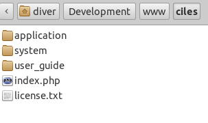
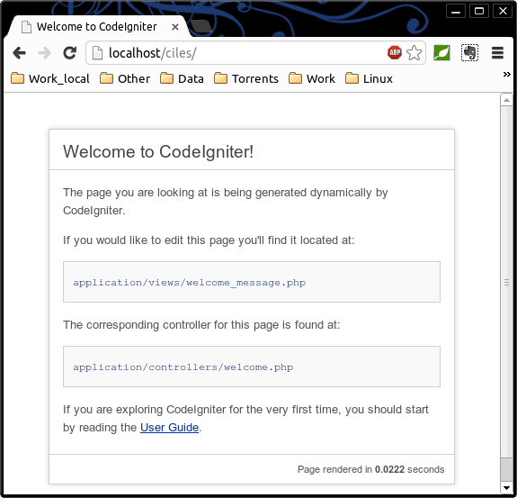

Забираем версию http://ellislab.com/codeigniter
На момент написания версия была - CodeIgniter_2.1.3
Создаём в корне вёб-сервера папочку ciles, и распаковываем в неё содиржимое архива, должно получиться примерно следущее:

папочка user_guide впринципе не нужна... там документация... и файл license.txt тоже не нужен
для Linux:
необходимо установить права для работы вёб-сервера
выполняем сл. команды:
sudo chown www-data:www-data ../ciles/ -R sudo chmod a+rwx ../ciles/ -R
первая установит владельцем всех файлов вёб-сервер, а вторая разрешит всем читать и писать в нашей папке
эту операцию необходимо делать только на локальном хостинге во время разработки, когда создаются новые файлы
под windows этих действий совершать не требуется
Можно запустить браузер и посмотреть наш новый сайт))
http://localhost/ciles/
